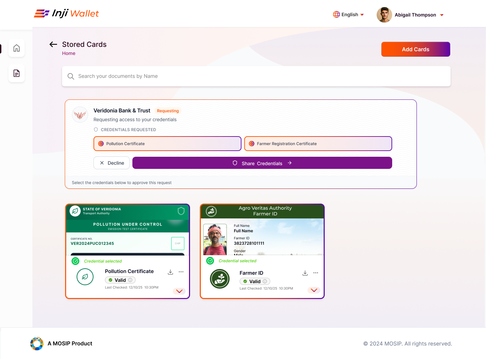
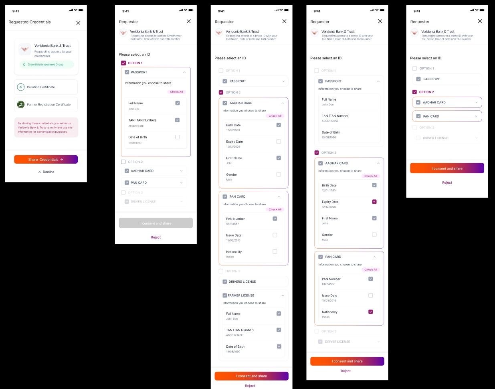
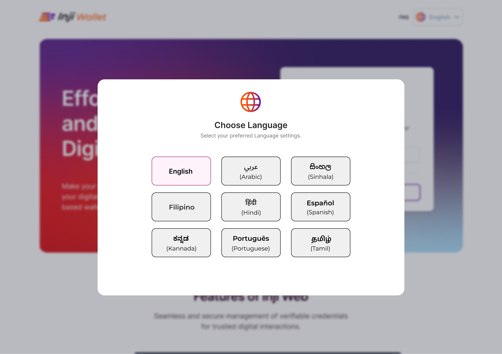
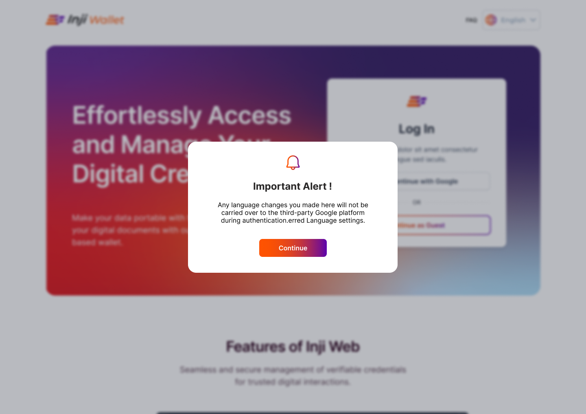

INJI Wallet
Digital Credential UX
at National Scale
Designing the wallet UI, onboarding, credential sharing, and consent flows for a verifiable digital identity wallet, built on MOSIP infrastructure, deployed across multiple countries.
My Role
- User Flows & Journey Mapping
- Credential detail & status indicator pages
- SD-JWT selective disclosure flow + exit alert
- DCQL credential request flow + consent
- Lo-Fi & Hi-Fi prototyping (Figma)
- UI & Visual Design
Built on MOSIP : deployed in Ethiopia, Philippines, Morocco, Sri Lanka and more. INJI is the user-facing wallet layer on top of this infrastructure.
Challenges
#1 SD-JWT Consent
Users must understand which attributes they're selectively sharing : plain language, no jargon, for users who may never have encountered digital credentials.
#2 DCQL Request Transparency
Verifier requests must become clear consent screens : who is asking, what they want, what will be shared.
#3 Onboarding for Low-Tech Users
First-time wallet users with low digital familiarity : setup needed to be simple without losing security or accuracy.
#4 Credential Sharing Trust
Sharing identity is high-stakes : UI needed to build confidence and make consequences legible before confirmation.
What I Designed

- Redesigned the landing page to be more user-understandable for first-time visitors
- Credential detail pages : showing the look and layout of each credential type
- Status indicator pages : active, expired, revoked states

- Flow where a verified organisation requests specific parts of a credential
- Clear distinction between mandatory fields and user-selectable fields
- Alert screen when a user attempts to leave mid-flow : warns that they cannot return to the same flow once they exit

- End-to-end flow for DCQL-based credential requests
- Options presented to the user, some compulsory, some selectable
- Consent step before any sharing is confirmed
Onboarding Redesign for Socioeconomic & Tech Accessibility
The SESMAG workshop focused on making INJI more accessible for users unfamiliar with digital platforms; resulting in a set of onboarding interventions designed around language accessibility and guided navigation.
#1 Language Discovery: Tour Guide (Logged Out)
Not all users know where the language button is or what it looks like. Designed a tour guide that walks users through finding and changing the language setting before logging in.
#2 Language Setting Alert
Added an alert informing users that their chosen language setting will not apply to third-party services (e.g. Google, for signing in with Gmail); setting clear expectations upfront.
#3 Language Pop-Up on First Visit
Designed a language selection pop-up that appears immediately when a user first visits the site; surfacing the option before they encounter any content in the wrong language.
#4 Tour Guide (Logged In)
A separate guided tour for users who are already logged in; helping them navigate the wallet UI and understand where key features are located.




WHAT CHANGED
- Tour guide for language button discovery, pre-login
- Language pop-up on first visit to the site
- Alert clarifying language settings do not apply to third-party login (Google)
- Tour guide for post-login navigation
Process
Discovery
Platform review · user group mapping · SESMAG workshop
Architecture
Flow mapping · consent logic · onboarding sequencing
Prototyping
Lo-fi → Hi-fi in Figma · all flow areas + onboarding redesign
Testing
Usability testing · iteration on consent language, onboarding & sharing flows
Reflection
Consent UX only works if users genuinely understand what they're agreeing to. The SESMAG work made that concrete; plain language in a credential wallet isn't a nice-to-have, it's the whole point.
SKILLS
Figma · Lo-Fi & Hi-Fi Prototyping · User Research · Usability Testing · Interaction Design · SD-JWT Credential UX · DCQL Consent Design · Onboarding Design · Inclusive Design · SESMAG